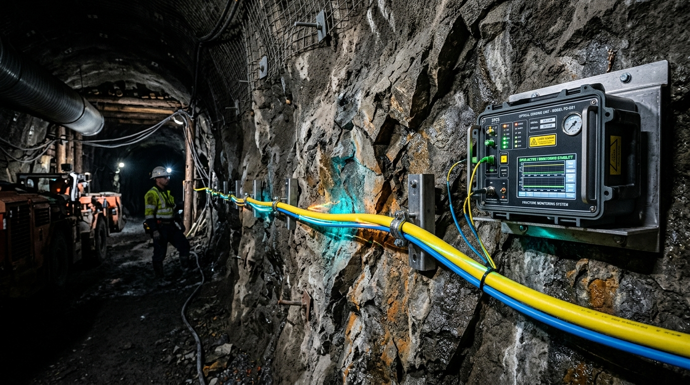
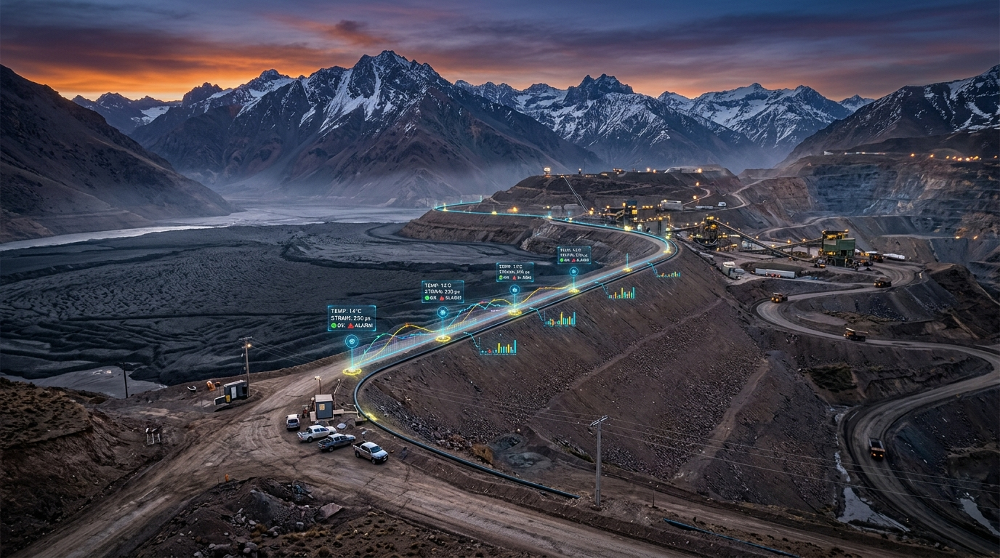
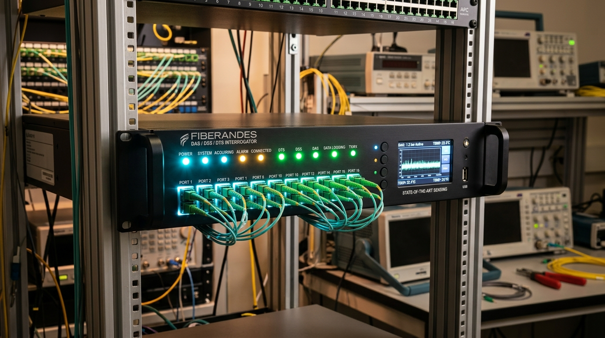

Toda la fibra es el sensor.
Monitoreo continuo en tiempo real y sin puntos ciegos.
La primera red de Distributed Fiber Optic Sensing (DFOS) en Chile para minería e infraestructura crítica. Medición simultánea de vibración acústica (DAS), deformación milimétrica (DSS) y gradiente de temperatura (DTS) a lo largo de hasta 50 km.
Monitoreo sin interrupciones
Puntos virtuales cada metro
Hasta 50 km por canal
Detección total de eventos
Modelo 3D: Sondajes con DAS vs. Geófonos en Galerías
Los geófonos tradicionales solo se pueden instalar en las paredes de los túneles transitables, dejando el 70% del macizo rocoso profundo y el avance del cave-back en un punto ciego crítico. Con FiberAndes, perforamos e inyectamos fibra óptica en sondajes profundos (daisy-chaining), monitoreando el corazón de la roca sin puntos ciegos.
Geófonos en Boreholes de Túnel
Instrumentación sísmica convencional en perforaciones cementadas (15 a 25 m en hastiales/techos) para superar la EDZ del túnel.
- Fuerte Atenuación Inelástica (Q): Las altas frecuencias (>150 Hz) de microsismos ($M_W < 0$) se disipan en el macizo rocoso fracturado. A >350 m del Cave-Back en ascenso, la señal cae bajo el piso de ruido ambiental antes de alcanzar los boreholes inferiores.
- Vacío Superior en Cota (Pérdida de Apertura 3D): Al progresar el caving hacia arriba, no existen galerías accesibles sobre la corona para perforar boreholes, generando un cono ciego superior sin cobertura vertical.
- Malla Puntual Discreta (±15 a ±25 m): Decenas de estaciones versus decenas de miles de canales continuos de fibra óptica distribuida.
- Cero Medición de Deformación Lenta (Slow-Strain, 0 Hz): Sensores inerciales dinámicos que no pueden medir la sobrecarga cuasi-estática y microdeformación lenta previa al estallido de roca (*rockburst*).
Distributed Fiber Optic Sensing
El cable de fibra óptica completo ES el sensor: un único hilo equivale a más de 50.000 sensores continuos.
- 100% Cobertura Continua: Muestreo ininterrumpido cada 1 metro a lo largo de toda la extensión.
- 100% Pasivo en Terreno: Solo viaja luz. Sin electricidad ni baterías en faena. Inmune a rayos, EMI y polvo.
- Costo marginal mínimo: Monitorear 10 km adicionales solo requiere extender fibra estándar o blindada.
- Multimodalidad simultánea: Combina sismicidad acústica (DAS), deformación (DSS) y filtraciones térmicas (DTS).
Tres pilares físicos sobre la misma fibra óptica
Interrogamos el cable mediante pulsos láser coherentes para medir tres fenómenos de retrodispersión óptica independientes:
Distributed Acoustic Sensing
Detección acústica distribuida mediante dispersión Rayleigh coherente ($\Phi$-OTDR). Mide ondas sísmicas inducidas, microfracturación de macizo rocoso y vibraciones dinámicas con muestreo de hasta 20 kHz.
Distributed Strain Sensing
Detección de deformación distribuida mediante dispersión Brillouin (BOTDA / BOTDR). Mide micro-deformación estática y dinámica ($\pm 2\,\mu\varepsilon$), detectando subsidencia, convergencia en túneles y cizallamiento en taludes.
Distributed Temperature Sensing
Detección térmica distribuida mediante dispersión Raman inelástica. Identifica filtraciones milimétricas en tranques de relaves (seepage), fugas en tuberías de proceso y monitoreo térmico en cables de alta potencia.
Validación empírica en minería y macizos rocosos profundos
Nuestros principios de diseño no son supuestos teóricos: se basan en el cuerpo de investigación científica más reciente sobre Distributed Acoustic Sensing aplicado a condiciones extremas de esfuerzo minero (como el proyecto Onaping Depth de Glencore y el Bedretto Underground Lab).
Monitoreo de Doble Banda: Sismos y Deformación Lenta
Los sensores sísmicos convencionales poseen filtros paso-alto que ignoran frecuencias inferiores a 5–10 Hz. DAS opera en Doble Banda simultánea: captura la microsismicidad dinámica de alta frecuencia (>10 Hz) y, al mismo tiempo, mide la tasa de deformación lenta (slow-strain, <0.1 Hz). Esta deformación cuasi-estática revela la redistribución de esfuerzos y la relajación asísmica del macizo rocoso horas y días antes de un estallido de roca (strainburst).
Reducción de Incertidumbre Espacial en Sondajes
En el proyecto minero Onaping Depth (Glencore, Canadá), la incorporación de arreglos de fibra óptica DAS en sondajes profundos integrados a la red de geófonos triaxiales demostró una reducción contundente del error de localización hipocentral: la desviación estándar del error bajó de 5 m a 3 m (~40% de mejora). La densidad continua de trayectorias de rayos a lo largo del pozo elimina ambigüedades espaciales de estaciones discretas.
Seguimiento de Cave-Back y Zona Plastificada
En métodos de hundimiento por bloques masivos, predecir la propagación vertical del quiebre (cave-back) es vital. La fibra óptica instalada en sondajes sub-verticales sobre el bloque detecta eventos de magnitudes extremadamente bajas (hasta Mw -2.0) asociados al quiebre inicial y mapea la expansión de la zona plastificada (yielded zone). Además, la tasa de deformación entrega advertencia anticipada días antes de que el cizalle corte el cable.
Sondajes Daisy-Chaining & Fibras de Alta Dispersión
Para optimizar la inversión en faena, desplegamos arreglos daisy-chain: un único cable continuo entra y sale de múltiples sondajes geomecánicos mediante bucles de fondo de pozo (*downhole turnarounds*). Con el uso de engineered fibers (fibras con micro-reflectores), se incrementa la retrodispersión Rayleigh en +20 dB, alcanzando un rango dinámico de 120 dB idéntico al de un geófono de laboratorio, pero distribuido en miles de metros.
| Parámetro Técnico | Red Híbrida Borehole (Geófono + Acelerómetro IMS) | FiberAndes DFOS (DAS + DSS + DTS) |
|---|---|---|
| Parámetro Físico Fundamental | Velocidad (u̇, mm/s) con geófono pasivo + Aceleración (ü, g) con acelerómetro piezoeléctrico | Tasa de Deformación Dinámica (ε̇, nε/s) con DAS + Deformación Estática (ε, µε) con DSS continua |
| Densidad Espacial de Canales | 30 a 80 cápsulas discretas cementadas en toda la mina | 10.000 sensores virtuales continuos cada 10 km (1 canal cada 1 metro ininterrumpido) |
| Banda de Frecuencia y Deformación Lenta | Paso-alto dinámico (>4.5 Hz a kHz) · 0% respuesta a deformación estática (0 Hz / DC) | Doble Banda Nativa: Dinámica de alta frecuencia (>5 kHz con DAS) + Slow-strain estático (0 Hz a <0.1 Hz con DSS) |
| Pre-alerta a Estallidos de Roca (Rockburst) | Ciego a la microdeformación previa · Registra solo el impacto una vez ocurrida la fractura dinámica | Detección de sobrecarga previa: mide la aceleración de creep cuasi-estático horas y días antes del colapso |
| Sensibilidad a Microeventos (Mw) | Geófono hasta Mw ~ -1.5 (lejos) · Acelerómetro hasta Mw ~ -2.5 (únicamente a <50 m por atenuación Q) | Hasta Mw < -2.5 continuo: fibra cementada en sondaje cruza el frente de quiebre a metros de distancia |
| Apertura 3D en Cota (Cave-Back) | Vacío Superior: restringido a niveles inferiores transitables · Sin acceso sobre la corona | Sondajes profundos desde superficie: atraviesa la corona y cierra el volumen 3D superior sin requerir túneles |
| Incertidumbre de Localización | Desviación estándar típica: ±15 a ±25 m en geometría planar de galerías | Desviación reducida a ±1.8 metros (densidad nanométrica de trayectorias de rayos en pozo) |
| Supervivencia ante Cizalle de Falla | Si la roca corta el cable de cobre, la estación híbrida se pierde irreversiblemente | Lectura continua hasta el punto de corte: detecta la cota métrica exacta del plano de cizalle |
Diseñado para la geología extrema de los Andes
Desde las profundidades de la minería subterránea chilena hasta tranques de relave y obras civiles de gran envergadura.

Minería SubterráneaMacizo Rocoso & Túneles Mineros
Monitoreo continuo de desprendimientos, caving, estabilidad de piques y control de fortificación. Cables de fibra embebidos en el macizo detectan microfracturación previa a estallidos de roca (rockburst) y convergencia en galerías con precisión milimétrica.

Tranques de RelavesTranques & Presas de Relave
Cumplimiento estricto de la normativa Sernageomin y estándar global GISTM. Integración simultánea de detección de filtraciones y líneas freáticas de saturación (DTS) con el monitoreo de asentamiento y deformación del muro (DSS) a lo largo de kilómetros.
Obras Civiles & Puentes
Monitoreo de salud estructural (SHM) en puentes de gran luz, viaductos, presas hidroeléctricas y fundaciones profundas.
Taludes en Rajo Abierto
Perfil continuo de cizallamiento y deformación en bermas y bancos de extracción, inmune a bloqueos por polvo o niebla.
Ductos & Mineroductos
Localización inmediata de derrames, fugas térmicas en tuberías de concentrado de cobre y detección perimetral de intrusión.
Ingeniería de despliegue y procesamiento avanzado
No nos limitamos a instalar cables: integramos la mejor optoelectrónica mundial y diseñamos redes de sensoramiento adaptadas a la geología minera más desafiante.
-
Integración de Interrogadores de Clase Mundial Trabajamos con interrogadores optoelectrónicos de última generación (DAS, DSS, DTS), seleccionando la tecnología óptica idónea para cada tipo de activo y longitud de monitoreo.
-
Instrumentación en Sondajes Profundos (Daisy-Chain) Desplegamos arreglos de fibra óptica dentro de pozos y sondajes geológicos, transformándolos en verdaderos sensores continuos 3D de temperatura, deformación y sismicidad en profundidad.
-
Algoritmos de Procesamiento de Señales Propios Desarrollamos algoritmos avanzados para filtrar ruido operacional, aislar microfracturas inducidas de tronaduras y correlacionar deformaciones con modelos geomecánicos.
-
Respaldo en Geofísica y Geomecánica Diseño experimental liderado por especialistas en sismología con fibra óptica y geología de peligros en Chile.

Configura la arquitectura para tu proyecto
Selecciona tu tipo de activo y objetivo para obtener una recomendación preliminar de instrumentación DFOS.
FiberAndes Core · DTS + DSS + DAS
Ciencia de frontera para la minería chilena
FiberAndes nace de la unión entre la investigación pionera en sismología con fibra óptica y la experiencia en terreno en geología de peligros en los Andes.
Verónica Geete Elgueta
Investigadora doctoral especializada en Distributed Acoustic Sensing (DAS) aplicado a sismicidad en volcanes y zonas de subducción. Amplia experiencia en el diseño y despliegue físico de experimentos en terreno y en el desarrollo de algoritmos de procesamiento avanzado de señales fotónicas.
José Estay Herrera
Geólogo con especialización en caracterización de peligros geológicos, geomecánica de macizos rocosos, estabilidad de taludes y riesgo sísmico en el contexto geodinámico andino. A cargo de la formulación de pilotos, arquitectura geológica de tendido y vinculación con la industria minera.
Convierte tu infraestructura en una red inteligente.
Nuestro equipo de ingenieros ópticos y geofísicos está listo para desplegar pilotos en faena y proyectos industriales en todo Chile.